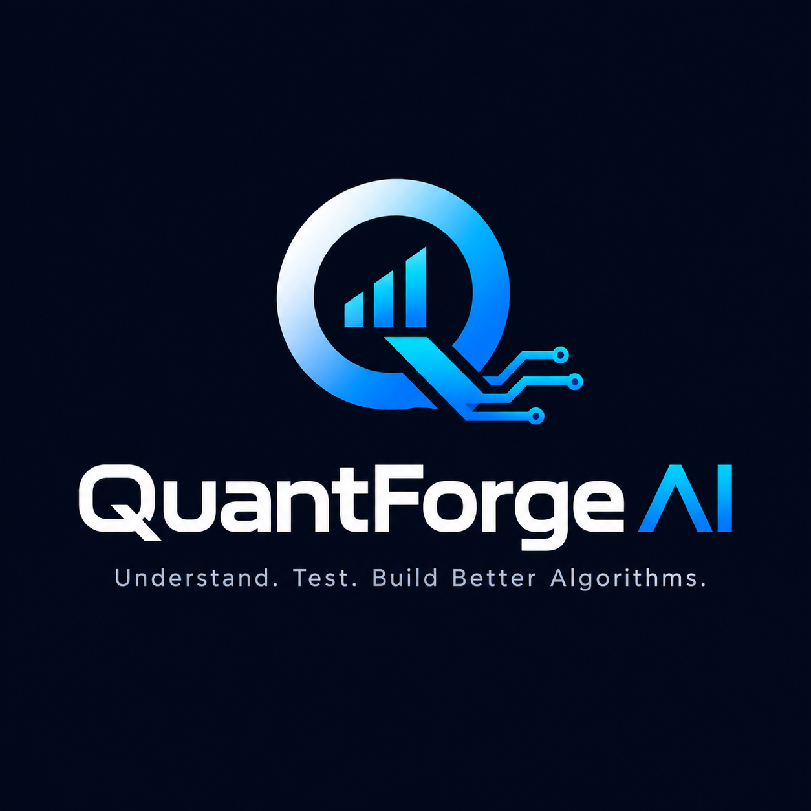

QuantForge AI is building research infrastructure for developers creating algorithmic trading systems.
Algorithmic trading development produces large amounts of source code, backtest results, trade logs and optimization data. Yet developers often lack the tools to understand why a system behaves the way it does.
QuantForge AI is designed to help developers analyze, understand and improve algorithmic trading systems.
Analyze algorithmic source code, architecture and system logic.
Investigate how trading systems actually behave across market conditions.
Analyze backtests, trades, risk, exits and performance characteristics.
Identify risk characteristics, drawdown behavior and potential weaknesses.
Turn observations into structured research questions and experiments.
Use AI to accelerate analysis, documentation and research workflows.
QuantForge AI is beginning with research into how algorithmic trading systems behave in real backtests. The research combines source-code analysis, trade data, diagnostic logging, score decomposition and behavioral patterns.
This research is currently in early-stage development.
QuantForge AI is currently being developed as an independent research and development project.